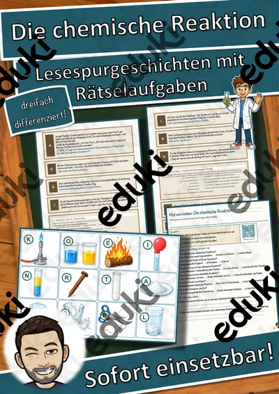
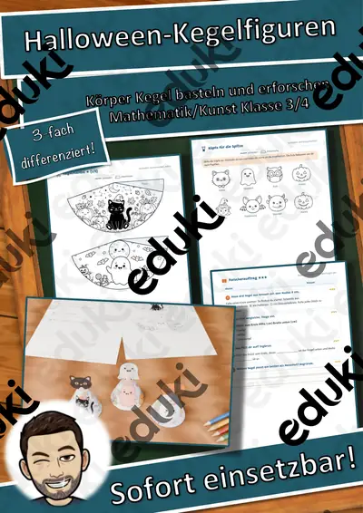

Der Bunsenbrenner – Lesespurgeschichte mit Rätselaufgaben (Klasse 8)
Mit dieser differenzierten Lesespurgeschichte erarbeiten die Lernenden selbstständig und motivierend, wie ein Bunsenbrenner aufgebaut ist und wie seine heiße, blaue Flamme entsteht – vom Standfuß über Schlauchansatz, Düse, Luftregler und Brennerrohr bis zum inneren Kegel und der äußeren Flamme. Die Chemikerin Frau Kolben führt durch den Gasbrenner.
So funktioniert die Lesespur: Die Lernenden lesen einen Abschnitt, entnehmen dem Hinweis ein Bauteil, suchen es auf dem farbigen Brenner-Plan (einer anschaulichen Schnittzeichnung) und lesen dort weiter. An jeder richtigen Station sammeln sie einen Buchstaben. Vier Sackgassen (Reagenzglas, Dreifuß, Becherglas, Waage) dienen der Selbstkontrolle und machen deutlich, dass diese Geräte zwar im Chemieraum stehen, aber nicht zum Brenner gehören. Am Ende ergeben die gesammelten Buchstaben ein geheimes Lösungswort rund um das Thema.
Inhaltlich verbindet das Material zentrale Themen der Chemie: den sicheren Umgang mit dem Gasbrenner, den Aufbau des Bunsenbrenners, das Zusammenwirken von Gas und Luft, den Unterschied zwischen vollständiger und unvollständiger Verbrennung sowie den Aufbau der Brennerflamme. Ein anschauliches, grundlegendes Thema aus dem Chemieunterricht und den Arbeitsweisen im Labor.
Das ist enthalten:
- Lesespurgeschichte in drei Niveaus (leicht, mittel, schwer) – ideal zur Differenzierung
- farbiger Brenner-Plan mit allen Stationen
- vier eingebettete Aufträge: Begriffe verbinden, Quiz, Rechenaufgabe, Steckbrief
- Hörverstehen mit QR-Code zum Hörtext (Teil A Ankreuzen, Teil B frei schreiben)
- Rätselseite (Wörter-Suchsel und Wissensquiz)
- Ausmalbild
- ausführliches Lösungsblatt mit Fundorten
- das komplette Material zusätzlich als drucksparende Schwarz-Weiß-Vorlage
Geförderte Kompetenzen: sinnentnehmendes und selektives Lesen, Anwenden von Lesestrategien, konzentriertes Zuhören sowie das naturwissenschaftliche Verständnis von Brenneraufbau, Verbrennung und sicherem Experimentieren.
Einsatz: Übungsphasen, Wochenplan, Stationenlernen, Vertretungsstunden, Freiarbeit und Nachhilfe. Umfang: 24 Seiten.
Ähnliche Materialien

Der Gasbrenner – Lesespurgeschichte mit Rätselaufgaben (Klasse 8)

Die chemische Reaktion – Lesespurgeschichte mit Rätselaufgaben (Klasse 8)

Brennen von Ton Lückentext mit Wortspeicher Hörverstehen und Suchsel

Inside the Bunsen Burner – Lesespurgeschichte mit Rätselaufgaben auf Englisch (Klasse 9)

Geometrische Körper - Steckbrief Kegel - Mathe - Geometrie - Differenziert

Halloween-Kegelfiguren – Körper Kegel basteln und erforschen, 3-fach differenziert (Mathematik/Kunst Klasse 3/4)

Das Gewissen und die innere Stimme – Lesespurgeschichte mit Rätselaufgaben (Klasse 10)